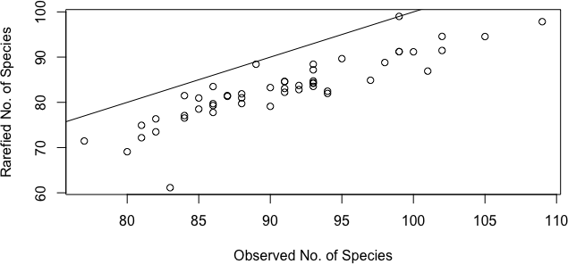
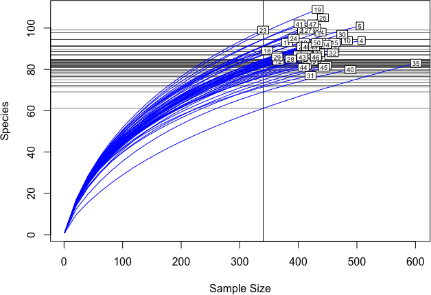
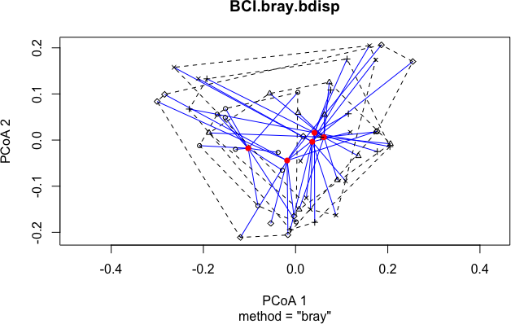
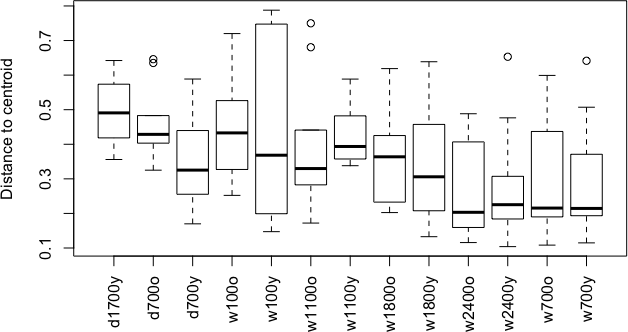
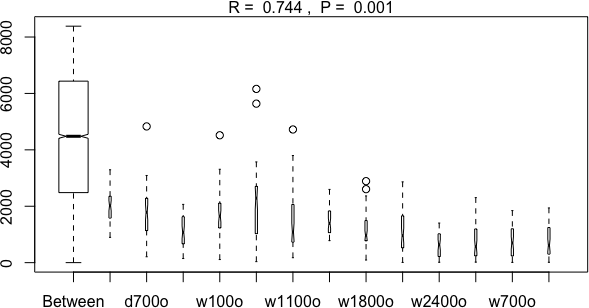

August 8, 2015 • ESA 2015
Workshop logistics
Workshop logistics
- Etherpad
- Red and Green Stickies


Packages installed?
install.packages("vegan", dependencies = TRUE)
install.packages("plyr")
install.packages("reshape2")
Data downloaded from github?
Introduction to vegan
a potted history
- Jari Oksanen released first version of vegan to CRAN on September 5th 2001
- Limited scope; purpose was to have Peter Minchin's DECODA-like functions for NMDS available in R plus helper functions
- By version 1.4, vegan had DCA & CCA, with RDA following in 1.4.2.
ordisurf()appeared in 1.4 also as did permutation tests. - From version 1.6, vegan expanded into areas of theoretical ecology and diversity
- Version 1.6.5 brought the
metaMDS()wrappers for NMDS - Since then vegan has rapidly developed on the R-Forge website and expanded considerably
- Current development team: Jari Oksanen, F. Guillaume Blanchet, Roeland Kindt, Pierre Legendre, Peter R. Minchin, R. B. O'Hara, Gavin L. Simpson, Peter Solymos, M. Henry H. Stevens, Helene Wagner
Introduction to vegan
vegan today
- The current stable release is version 2.3.0 which is available from CRAN
- http://cran.r-project.org/web/packages/vegan
- Development is mainly conducted via github with a separate development version
- Development branch is 2.4.x with no plans to release to CRAN soon
- Github also hosts our bug tracking, but we use R-Forge for mailing lists & forums which should be first port of call for getting help
- http://r-forge.r-project.org/projects/vegan
- Also several vignettes (manuals/guides) containing R code to explain how vegan works
- The vegan tutorial is available at http://vegan.r-forge.r-project.org
Cleaning and importing data
Digging in
Prepping your data for R and vegan
“The purpose of computing is insight, not numbers”
- Richard Hamming
Digging in
Prepping your data for R and vegan
“The purpose of computing is insight, not numbers”
- Richard Hamming
But you have to get through the numbers to get to the insight…
Digging in
Prepping your data for R and vegan
We've all heard data horror stories 
Cleaning your data for R and vegan
Loading dirty data and then cleaning
setwd("your/working/directory/")
BCI.small.csv.in <- read.csv("data/BCI_small.csv", header = TRUE, row.names = 1)
RStudio example
Cleaning your data for R and vegan
Loading dirty data and then cleaning
BCI.small.csv.in <- read.csv("data/BCI_small_fixed.csv", header = TRUE, row.names = 1)
Cleaning your data for R and vegan
Then…
head(BCI.small.csv.in, n=3)
Abarema.macradenium Acacia.melanoceras Acalypha.diversifolia 1 0 1 0 2 1 0 0 3 0 0 0 Acalypha.macrostachya Adelia.triloba 1 0 0 2 0 0 3 1 0
Cleaning your data for R and vegan
Then…
summary(BCI.small.csv.in)
Abarema.macradenium Acacia.melanoceras Acalypha.diversifolia Min. :0.0 Min. :0.00 Min. :0.0 1st Qu.:0.0 1st Qu.:0.00 1st Qu.:0.0 Median :0.0 Median :0.00 Median :0.0 Mean :0.3 Mean :0.25 Mean :0.3 3rd Qu.:0.0 3rd Qu.:0.25 3rd Qu.:0.0 Max. :2.0 Max. :1.00 Max. :3.0 Acalypha.macrostachya Adelia.triloba Min. :0.00 Min. :0.0 1st Qu.:0.00 1st Qu.:0.0 Median :0.00 Median :0.0 Mean :0.05 Mean :0.8 3rd Qu.:0.00 3rd Qu.:1.0 Max. :1.00 Max. :5.0
Cleaning your data for R and vegan
We will now switch to using one of vegan's built-in datasets for species (BCI) and environmental variables from the same paper, which we will load directly
- from Condit et al. 2002 Science
library("vegan")
data(BCI)
BCI.env <- read.csv("data/BCI.env.csv", header = TRUE, row.names = 1)
Cleaning your data for R and vegan
We will now switch to using one of vegan's built-in datasets for species (BCI) and environmental variables from the same paper, which we will load directly
- from Condit et al. 2002 Science
library("vegan")
data(BCI)
BCI.env <- read.csv("data/BCI.env.csv", header = TRUE, row.names = 1)
head(BCI[,1:3], n = 3)
Abarema.macradenia Acacia.melanoceras Acalypha.diversifolia 1 0 0 0 2 0 0 0 3 0 0 0
Basic data summarizing
Summarizing data with apply()
sums and sorting
Sum of rows
sum.of.rows <- apply(BCI, 1, sum) sort(sum.of.rows, decreasing = TRUE)[1:8] #top 8 rows (plots)
35 4 5 40 10 30 3 15 601 508 505 489 483 475 463 462
Summarizing data with apply()
sums and sorting
Sum of rows
sum.of.rows <- apply(BCI, 1, sum) sort(sum.of.rows, decreasing = TRUE)[1:8] #top 8 rows (plots)
35 4 5 40 10 30 3 15 601 508 505 489 483 475 463 462
Sum of columns
sum.of.columns <- apply(BCI, 2, sum) sort(sum.of.columns, decreasing = TRUE)[1:3] #top 3 columns (species)
Faramea.occidentalis Trichilia.tuberculata Alseis.blackiana
1717 1681 983
Summarizing data with apply()
sums and sorting
Number of plots in which each spp. occurs
spec.pres <- apply(BCI > 0, 2, sum) sort(spec.pres, decreasing = TRUE)[1:18]
Alseis.blackiana Faramea.occidentalis Hirtella.triandra
50 50 50
Oenocarpus.mapora Protium.tenuifolium Tetragastris.panamensis
50 50 50
Trichilia.tuberculata Apeiba.glabra Gustavia.superba
50 49 49
Pouteria.reticulata Quararibea.asterolepis Randia.armata
49 49 49
Brosimum.alicastrum Cordia.lasiocalyx Eugenia.oerstediana
48 48 48
Guarea.guidonia Hasseltia.floribunda Heisteria.concinna
48 48 48
Data Transformation
Basic data transformation
Square root transformation
head(BCI[,162:164], n = 3)
Prioria.copaifera Protium.costaricense Protium.panamense 1 13 5 2 2 12 4 0 3 12 1 2
Basic data transformation
Square root transformation
head(BCI[,162:164], n = 3)
Prioria.copaifera Protium.costaricense Protium.panamense 1 13 5 2 2 12 4 0 3 12 1 2
spec.sqrt <- sqrt(BCI) head(spec.sqrt[,162:164], n = 3)
Prioria.copaifera Protium.costaricense Protium.panamense 1 3.605551 2.236068 1.414214 2 3.464102 2.000000 0.000000 3 3.464102 1.000000 1.414214
Data transformation in vegan with decostand()
Total
head(BCI[,162:164], n = 3)
Prioria.copaifera Protium.costaricense Protium.panamense 1 13 5 2 2 12 4 0 3 12 1 2
Data transformation in vegan with decostand()
Total
head(BCI[,162:164], n = 3)
Prioria.copaifera Protium.costaricense Protium.panamense 1 13 5 2 2 12 4 0 3 12 1 2
spec.total <- decostand(BCI, method = "total", MARGIN = 1) # by rows (sites) head(spec.total[,162:164], n = 3)
Prioria.copaifera Protium.costaricense Protium.panamense 1 0.02901786 0.011160714 0.004464286 2 0.02758621 0.009195402 0.000000000 3 0.02591793 0.002159827 0.004319654
Data transformation in vegan with decostand()
Maximum
head(BCI[,162:164], n = 3)
Prioria.copaifera Protium.costaricense Protium.panamense 1 13 5 2 2 12 4 0 3 12 1 2
Data transformation in vegan with decostand()
Maximum
head(BCI[,162:164], n = 3)
Prioria.copaifera Protium.costaricense Protium.panamense 1 13 5 2 2 12 4 0 3 12 1 2
spec.max <- decostand(BCI, method = "max", MARGIN = 2) # by columns (species) head(spec.max[,162:164], n = 3)
Prioria.copaifera Protium.costaricense Protium.panamense 1 0.5000000 0.7142857 0.5 2 0.4615385 0.5714286 0.0 3 0.4615385 0.1428571 0.5
Data transformation in vegan with decostand()
Presence-Absence
head(BCI[,162:164], n = 3)
Prioria.copaifera Protium.costaricense Protium.panamense 1 13 5 2 2 12 4 0 3 12 1 2
Data transformation in vegan with decostand()
Presence-Absence
head(BCI[,162:164], n = 3)
Prioria.copaifera Protium.costaricense Protium.panamense 1 13 5 2 2 12 4 0 3 12 1 2
spec.pa <- decostand(BCI, method = "pa") head(spec.pa[,162:164], n = 3)
Prioria.copaifera Protium.costaricense Protium.panamense 1 1 1 1 2 1 1 0 3 1 1 1
Data transformation in vegan with decostand()
Hellinger (Legendre & Gallagher 2001) Square root of method "total"
head(BCI[,162:164], n = 3)
Prioria.copaifera Protium.costaricense Protium.panamense 1 13 5 2 2 12 4 0 3 12 1 2
Data transformation in vegan with decostand()
Hellinger (Legendre & Gallagher 2001) Square root of method "total"
head(BCI[,162:164], n = 3)
Prioria.copaifera Protium.costaricense Protium.panamense 1 13 5 2 2 12 4 0 3 12 1 2
spec.hellinger <- decostand(BCI, method = "hellinger", MARGIN = 1) # on rows (sites) head(spec.hellinger[,162:164], n = 3)
Prioria.copaifera Protium.costaricense Protium.panamense 1 0.1703463 0.10564428 0.06681531 2 0.1660910 0.09589266 0.00000000 3 0.1609905 0.04647394 0.06572408
Data transformation in vegan with decostand()
Wisconsin double standardization
Shortcut function for standardizing species to maximum, then sites by totals.
head(BCI[,162:164], n = 3)
Prioria.copaifera Protium.costaricense Protium.panamense 1 13 5 2 2 12 4 0 3 12 1 2
Data transformation in vegan with decostand()
Wisconsin double standardization
Shortcut function for standardizing species to maximum, then sites by totals.
head(BCI[,162:164], n = 3)
Prioria.copaifera Protium.costaricense Protium.panamense 1 13 5 2 2 12 4 0 3 12 1 2
spec.wisc <- wisconsin(BCI) head(spec.wisc[,162:164], n = 3)
Prioria.copaifera Protium.costaricense Protium.panamense 1 0.01315834 0.018797633 0.01315834 2 0.01532406 0.018972642 0.00000000 3 0.01410727 0.004366536 0.01528288
Calculating community distances
Calculating distances with vegdist()
so many distance metrics, so little time!
Many different community distance metrics are available in vegdist()
manhattan, euclidean, canberra, bray, kulczynski, jaccard, gower, altGower, morisita, horn, mountford, raup, binomial, chao, or cao
Calculating distances with vegdist()
so many distance metrics, so little time!
Many different community distance metrics are available in vegdist()
manhattan, euclidean, canberra, bray, kulczynski, jaccard, gower, altGower, morisita, horn, mountford, raup, binomial, chao, or cao
spec.jaccpa <- vegdist(BCI, method = "jaccard", binary = TRUE) # returns an object of class 'dist' str(spec.jaccpa)
Class 'dist' atomic [1:1225] 0.434 0.462 0.442 0.46 0.425 ... ..- attr(*, "Size")= int 50 ..- attr(*, "Labels")= chr [1:50] "1" "2" "3" "4" ... ..- attr(*, "Diag")= logi FALSE ..- attr(*, "Upper")= logi FALSE ..- attr(*, "method")= chr "binary jaccard" ..- attr(*, "call")= language vegdist(x = BCI, method = "jaccard", binary = TRUE)
Calculating distances with vegdist()
so many distance metrics, so little time!
as.matrix(spec.jaccpa)[1:4,1:4]
1 2 3 4 1 0.0000000 0.4336283 0.4621849 0.4416667 2 0.4336283 0.0000000 0.4464286 0.4385965 3 0.4621849 0.4464286 0.0000000 0.4273504 4 0.4416667 0.4385965 0.4273504 0.0000000
Calculating distances with vegdist()
so many distance metrics, so little time!
How to choose a good one for your data set?
First step, read the help for vegdist
?vegdist
Calculating distances with vegdist()
so many distance metrics, so little time!
Second, try rankindex()
Higher rank correlations indicate better separation along gradients
rank.UTM.NS <- rankindex(BCI.env$UTM.NS, BCI, indices =
c("bray", "euclid", "manhattan", "horn"), method = "spearman")
rank.UTM.NS
bray euclid manhattan horn 0.1344155 0.1520871 0.1727256 0.1687463
Calculating distances with vegdist()
so many distance metrics, so little time!
Second, try rankindex()
Can also use on standardized data
rank.UTM.NS.wisc <- rankindex(BCI.env$UTM.NS, wisconsin(BCI), indices =
c("bray", "euclid", "manhattan", "horn"), method = "spearman")
rank.UTM.NS.wisc
bray euclid manhattan horn 0.12053153 0.07630866 0.12053153 0.12799120
Calculating distances with vegdist()
comparison
sort(rank.UTM.NS, decreasing = TRUE)
manhattan horn euclid bray 0.1727256 0.1687463 0.1520871 0.1344155
sort(rank.UTM.NS.wisc, decreasing = TRUE)
horn bray manhattan euclid 0.12799120 0.12053153 0.12053153 0.07630866
Activity
There is a data file in the workshop repositiory, in the 01-intro-basics/data/ folder called varespec.xlsx.
- Download this file (which has errors)
- Make a copy
- Clean it up
- Load it into R
- Try at least two different methods to standardize the data.
- Evaluate at least five different community distance metrics with
rankindex() - Calculate community distances using that metric.
Diversity metrics
Alpha diversity
Basic counts of richness for each plot or site
site.richness <- apply(BCI > 0, 1, sum) site.richness[1:18]
1 2 3 4 5 6 7 8 9 10 11 12 13 14 15 16 17 18 93 84 90 94 101 85 82 88 90 94 87 84 93 98 93 93 93 89
Alpha diversity
Other metrics
Fisher's alpha
site.fisher <- fisher.alpha(BCI) site.fisher[1:12]
1 2 3 4 5 6 7 8
35.67297 30.99091 33.32033 33.92209 37.96423 32.49374 30.58383 33.44981
9 10 11 12
35.67236 34.82320 34.20590 34.12041
Alpha diversity
Other metrics
Shannon diversity
site.shannon <- diversity(BCI, index = "shannon", MARGIN = 1) site.shannon[1:12]
1 2 3 4 5 6 7 8
4.018412 3.848471 3.814060 3.976563 3.969940 3.776575 3.836811 3.908381
9 10 11 12
3.761331 3.889803 3.859814 3.698414
Rarefaction
This is the same as apply(BCI > 0, MARGIN = 1, sum)
it gives the species count for each plot
BCI.S <- specnumber(BCI)
This finds the plot with the least number of individuals
# could also use rowsums() instead of apply() BCI.raremax <- min(apply(BCI, 1, sum))
Rarefaction
Rarefy BCI species matrix to the minimum number of individuals in any plot
and plot the relationship between observed and rarefied counts (plus add 1-1 line)
BCI.Srare <- rarefy(BCI, BCI.raremax) plot(BCI.S, BCI.Srare, xlab = "Observed No. of Species", ylab = "Rarefied No. of Species") abline(0, 1)
Rarefaction
Put it all together
rarecurve(BCI, step = 20, sample = BCI.raremax, col = "blue", cex = 0.6)
Beta diversity
Multivariate homogeneity of groups dispersions
BCI.bray <- vegdist(BCI, method = "bray") (BCI.bray.bdisp <- betadisper(BCI.bray,group = as.factor(BCI.env$UTM.NS)))
Homogeneity of multivariate dispersions
Call: betadisper(d = BCI.bray, group = as.factor(BCI.env$UTM.NS))
No. of Positive Eigenvalues: 43
No. of Negative Eigenvalues: 6
Average distance to median:
1011568.985 1011668.985 1011768.985 1011868.985 1011968.985
0.2817 0.2663 0.3140 0.2945 0.3339
Eigenvalues for PCoA axes:
PCoA1 PCoA2 PCoA3 PCoA4 PCoA5 PCoA6 PCoA7 PCoA8
1.0163 0.7067 0.5318 0.3316 0.2606 0.2507 0.2257 0.1703
Beta diversity
Multivariate homogeneity of groups dispersions
permutest(BCI.bray.bdisp)
Permutation test for homogeneity of multivariate dispersions
Permutation: free
Number of permutations: 999
Response: Distances
Df Sum Sq Mean Sq F N.Perm Pr(>F)
Groups 4 0.028314 0.0070785 1.8041 999 0.165
Residuals 45 0.176555 0.0039235
Beta diversity
Plot of within-group multivariate dispersion
plot(BCI.bray.bdisp)
Beta diversity
Boxplot of within-group multivariate dispersion
boxplot(BCI.bray.bdisp)
Beta diversity
ANOSIM
Analysis of similarities
(BCI.bray.anosim <- anosim(BCI.bray, as.factor(BCI.env$UTM.NS)))
Call:
anosim(dat = BCI.bray, grouping = as.factor(BCI.env$UTM.NS))
Dissimilarity: bray
ANOSIM statistic R: 0.1019
Significance: 0.005
Permutation: free
Number of permutations: 999
Beta diversity
ANOSIM
Analysis of similarities
plot(BCI.bray.anosim)
PERMANOVA using adonis
Analysis of variance using distance matrices and for fitting linear models to distance matrices
adonis(BCI ~ BCI.env$Age.cat)
Call:
adonis(formula = BCI ~ BCI.env$Age.cat)
Permutation: free
Number of permutations: 999
Terms added sequentially (first to last)
Df SumsOfSqs MeanSqs F.Model R2 Pr(>F)
BCI.env$Age.cat 1 0.0786 0.078572 0.72989 0.01498 0.736
Residuals 48 5.1671 0.107648 0.98502
Total 49 5.2457 1.00000